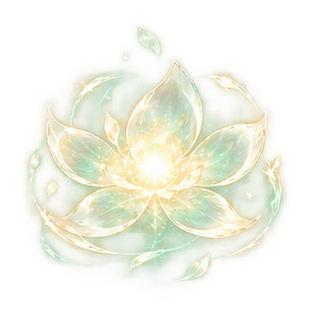

PROJECT V · HEALER COLLECTION
백의의 맹세
네 명의 간호사, 하나의 회복 스킬.
SS힐러 4명
공통 스킬 1종
공통 스킬 1종
CHARACTER ART원화 확대 ↗
공통 스킬 · 01
백의의 맹세
치유의 빛을 모아 아군에게 펼칩니다.
네 간호사 모두 동일한 스킬 리소스를 사용합니다.

전장 준비
전투 SD와 회복 연출을 준비하고 있습니다.
01치유 에너지 집중02빛 전개03회복04잔향 · 소멸
16프레임 연속 스프라이트 보기
4명의 SS 힐러